MAT 370: Linear Interpolation for Root-Finding
Secant and False-Position Methods
December 31, 2025
Motivation and Context
In the previous notebook we introduced the method of bisection to close in on a root of a function \(f\left(x\right)\), given a bracketed interval \(\left[x_1, x_2\right]\).
We saw that the bisection method gets closer to the root by halving the bracketed interval at each interation and choosing the half-interval over which \(f\left(x\right)\) remains bracketed to continue searching within.
Rather than simply choosing the midpoint of the current bracketed interval as an endpoint for the next iteration, linear interpolation methods construct linear approximations of \(f\left(x\right)\) and use the root of the linear interpolant as an endpoint for their next iteration.

Improvements Over Bisection
Bisection works reasonably well – with each iteration we gain one bit of precision.
It is common to say that “bisection converges linearly” since we gain the same amount of precision with each iteration – about one decimal digit every three iterations.
The bisection method uses nearly no information about the function whose root we are seeking. It uses the function values at the endpoints and midpoint of the interval only.
It is reasonable to expect that if we used some additional information about the function, then we could achieve faster convergence.
This pursuit will be the focus of today’s discussion.
Basic Linear Interpolants
There are two very basic types of linear interpolation – the secant method and the false position method.
Both of which are illustrated in the graph in the right panel from the previous slide and below.
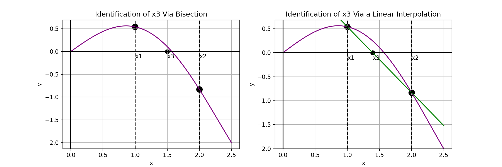
They methods differ in two ways.
- The secant method does not require a bracketed interval but the false position method does
- The secant method always chooses the interval between \(x_2\) and \(x_3\) as the interval for its next iteration, where the false position method chooses the bracketed interval.
Secant Method
Given any interval, \(\left[x_1, x_2\right]\), the strategy for the secant method is easy to describe:
- Construct the secant line to \(f\left(x\right)\) through \(\left(x_1, f\left(x_1\right)\right)\) and \(\left(x_2, f\left(x_2\right)\right)\).
- Find the root associated with the secant line and label it \(x_3\).
- Replace \(x_1\) with \(x_2\) and replace \(x_2\) with \(x_3\)
- Repeat steps 1 - 3 until the stopping condition is reached.
- Note: Running the secant method for too many iterations can result in incorrect results. A common stopping condition is to stop when the distance between \(x_2\) and \(x_3\) is below some tolerance.
- Common issues include diverging away from the root or falling into a cyclic rotation.
The predicted root is: 1.393635355304309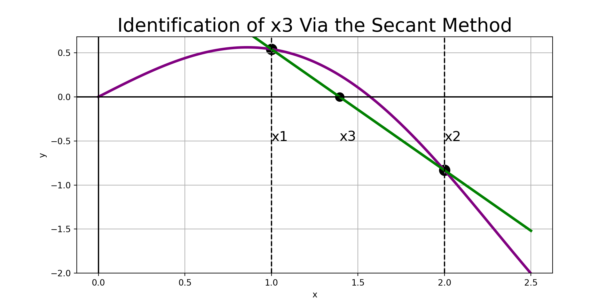
Secant Method
Given any interval, \(\left[x_1, x_2\right]\), the strategy for the secant method is easy to describe:
- Construct the secant line to \(f\left(x\right)\) through \(\left(x_1, f\left(x_1\right)\right)\) and \(\left(x_2, f\left(x_2\right)\right)\).
- Find the root associated with the secant line and label it \(x_3\).
- Replace \(x_1\) with \(x_2\) and replace \(x_2\) with \(x_3\)
- Repeat steps 1 - 3 until the stopping condition is reached.
- Note: Running the secant method for too many iterations can result in incorrect results. A common stopping condition is to stop when the width of the interval is below some tolerance.
- Common issues include diverging away from the root or falling into a cyclic rotation.
The predicted root is: 1.531801401159806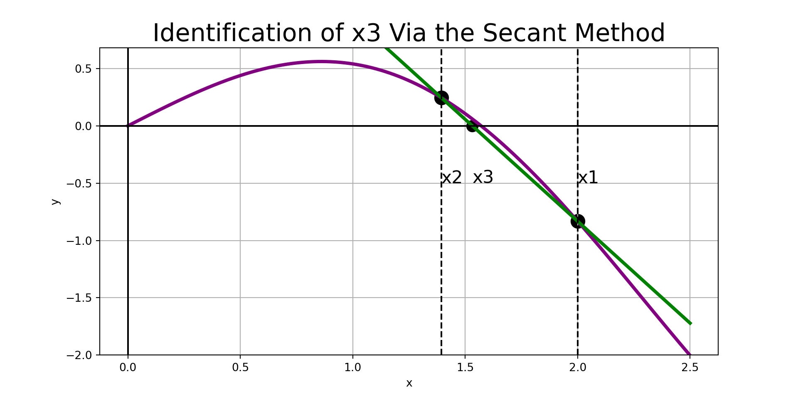
Secant Method
Given any interval, \(\left[x_1, x_2\right]\), the strategy for the secant method is easy to describe:
- Construct the secant line to \(f\left(x\right)\) through \(\left(x_1, f\left(x_1\right)\right)\) and \(\left(x_2, f\left(x_2\right)\right)\).
- Find the root associated with the secant line and label it \(x_3\).
- Replace \(x_1\) with \(x_2\) and replace \(x_2\) with \(x_3\)
- Repeat steps 1 - 3 until the stopping condition is reached.
- Note: Running the secant method for too many iterations can result in incorrect results. A common stopping condition is to stop when the width of the interval is below some tolerance.
- Common issues include diverging away from the root or falling into a cyclic rotation.
The predicted root is: 1.5761871866579347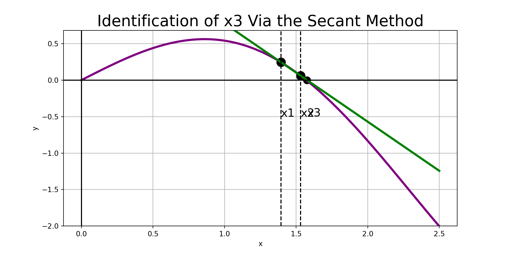
Bisection by Hand
Let’s work through an example by hand to make sure we understand the procedure.
Example: The function \(f\left(x\right) = x^2 - 5x + 3\) has a root on the interval \(\left[0, 2\right]\). We verified that this interval is bracketed and also carried out four iterations of the bisection method to approximate the value of the root in the previous discussion. Carry out three iterations of each of the secant method to approximate the root.
False Position Methods (I)
Given a bracketed interval, the strategy of our first false position method is simple:
- Construct the secant line to \(f\left(x\right)\) through \(\left(x_1, f\left(x_1\right)\right)\) and \(\left(x_2, f\left(x_2\right)\right)\).
- Find the root associated with the secant line and label it \(x_3\).
- If \(\left[x_1, x_3\right]\) brackets \(f\left(x\right)\), then replace \(x_2\) with \(x_3\). Otherwise, replace \(x_1\) with \(x_3\).
- Repeat steps 1 - 3 until the desired accuracy is achieved.
The predicted root is: 1.393635355304309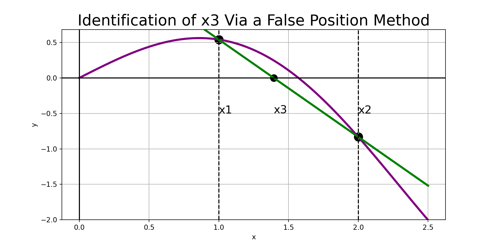
False Position Methods (I)
Given a bracketed interval, the strategy of our first false position method is simple:
- Construct the secant line to \(f\left(x\right)\) through \(\left(x_1, f\left(x_1\right)\right)\) and \(\left(x_2, f\left(x_2\right)\right)\).
- Find the root associated with the secant line and label it \(x_3\).
- If \(\left[x_1, x_3\right]\) brackets \(f\left(x\right)\), then replace \(x_2\) with \(x_3\). Otherwise, replace \(x_1\) with \(x_3\).
- Repeat steps 1 - 3 until the desired accuracy is achieved.
The predicted root is: 1.5317912879212798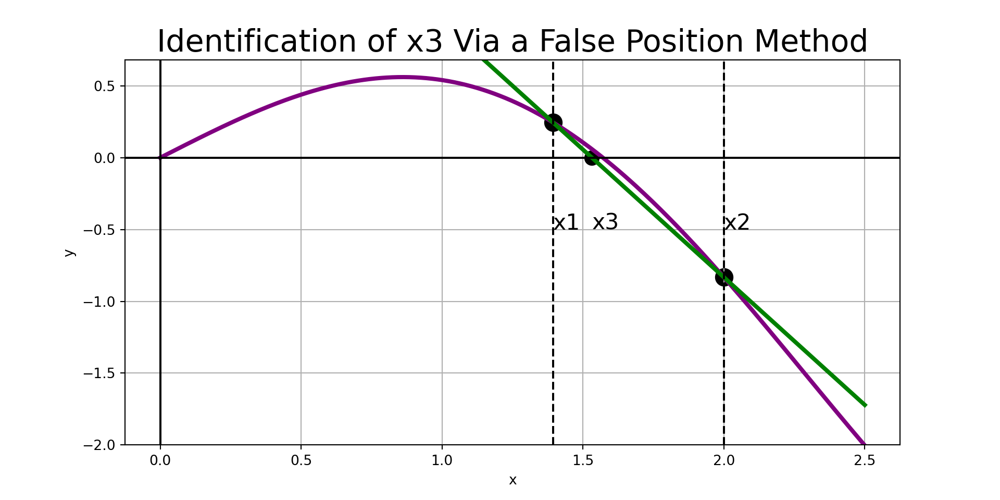
False Position Methods (I)
Given a bracketed interval, the strategy of our first false position method is simple:
- Construct the secant line to \(f\left(x\right)\) through \(\left(x_1, f\left(x_1\right)\right)\) and \(\left(x_2, f\left(x_2\right)\right)\).
- Find the root associated with the secant line and label it \(x_3\).
- If \(\left[x_1, x_3\right]\) brackets \(f\left(x\right)\), then replace \(x_2\) with \(x_3\). Otherwise, replace \(x_1\) with \(x_3\).
- Repeat steps 1 - 3 until the desired accuracy is achieved.
The predicted root is: 1.5631455475829248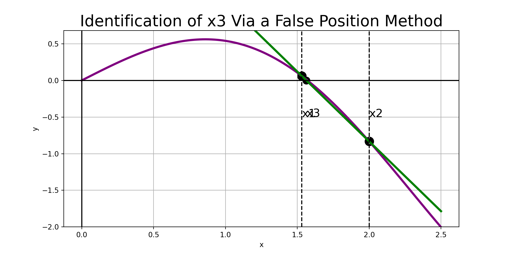
False Position Method by Hand
Example: Carry out three iterations of this false position method to approximate the root of the function \(f\left(x\right) = x^2 - 5x + 3\) on the interval \(\left[0, 2\right]\)
Ridder’s Method
We won’t implement the secant method or this first false position method because there is another false position method with faster convergence, called Ridder’s Method.
Ridder’s method has near-quadratic convergence. This means that, once the method gets sufficiently close to the root, it approximately doubles the number of decimal digits of precision with each iteration.
Ridder’s Method Explained
Ridder’s Method makes a modification to the false position method by constructing a linear interpolation which may not be a secant line to the function \(f\left(x\right)\).
Instead, it forces the three points \(\left(x_1, g_1\right)\), \(\left(x_2, g_2\right)\), and \(\left(x_3, g_3\right)\) to lie along a straight line, where
\[g_i = g\left(x_i\right) = f\left(x_i\right)e^{\left(x_i - x_1\right)Q}\]
We’ll need to solve for \(Q\) during each iteration.
Strategy (Ridder’s Method): Given a function \(f\left(x\right)\) and a bracketed interval \(\left[x_1, x_2\right]\),
- Let \(\displaystyle{h = \frac{x_2 - x_1}{2}}\) and compute \(\displaystyle{x_3 = x_1 + h}\). (Note: \(x_3\) is the midpoint between \(x_1\) and \(x_2\))
- Form the equations \(g_1 = f\left(x_1\right)\), \(g_2 = f\left(x_2\right)e^{2hQ}\), and \(g_3 = f\left(x_3\right)e^{hQ}\), with \(Q\) unknown.
- Solve for \(Q\) to force \(\left(x_1, g_1\right)\), \(\left(x_2, g_2\right)\), and \(\left(x_3, g_3\right)\) to all lie along a straight line, \(L\).
- Solve for the root of \(L\) and call it \(x_4\).
- Re-bracket the root as tightly as possible using either the endpoints \(x_3\) and \(x_4\), the interval \(\left[x_1, x_4\right]\), or the interval \(\left[x_4, x_2\right]\). Overwrite \(x_1\) and \(x_2\) with the endpoints of the new bracketed interval.
- Repeat steps 1 - 5 until changes in successive values of \(x_4\) fall below some tolerance. At which case, return \(x_4\) as the approximate root.
We’ll delve into more of the math involved in finding \(Q\) after building some visual intuition on the next slide.
Ridder’s Method, Visually
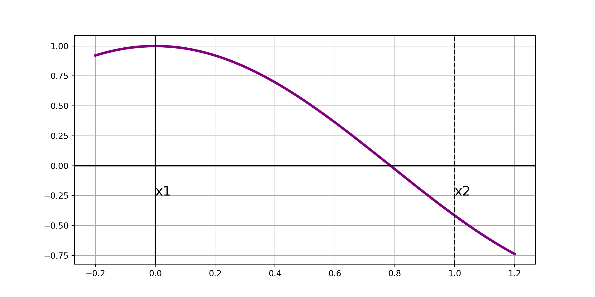Ridder’s Method, Visually
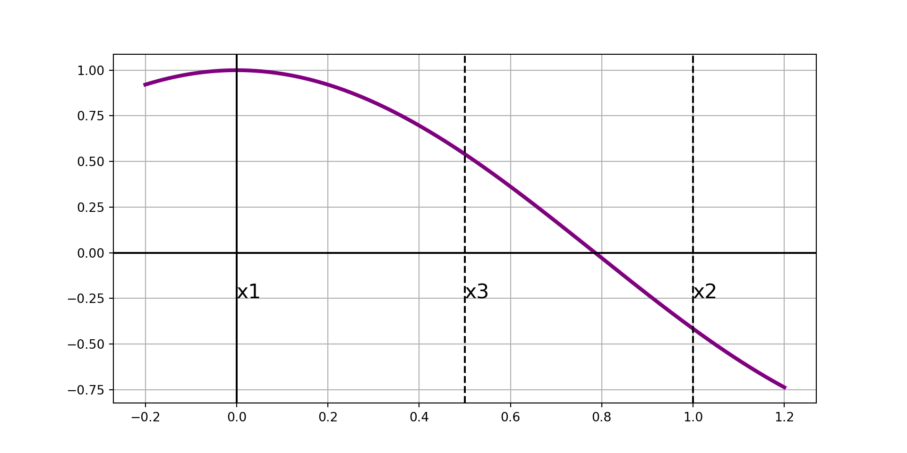Ridder’s Method, Visually
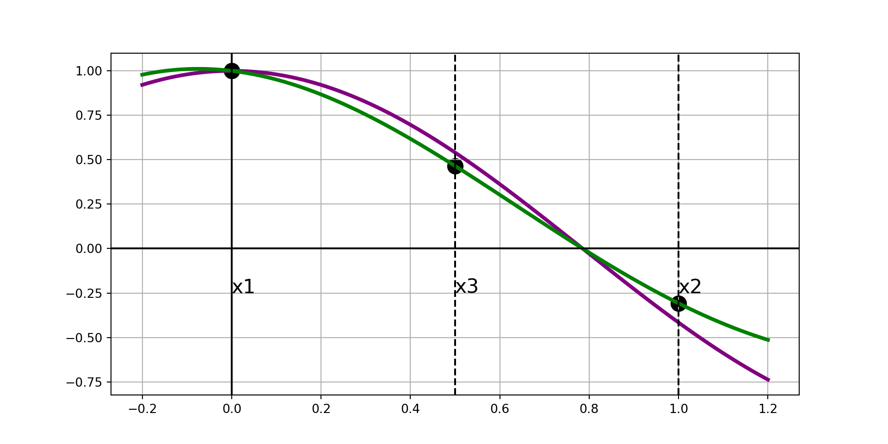Ridder’s Method, Visually
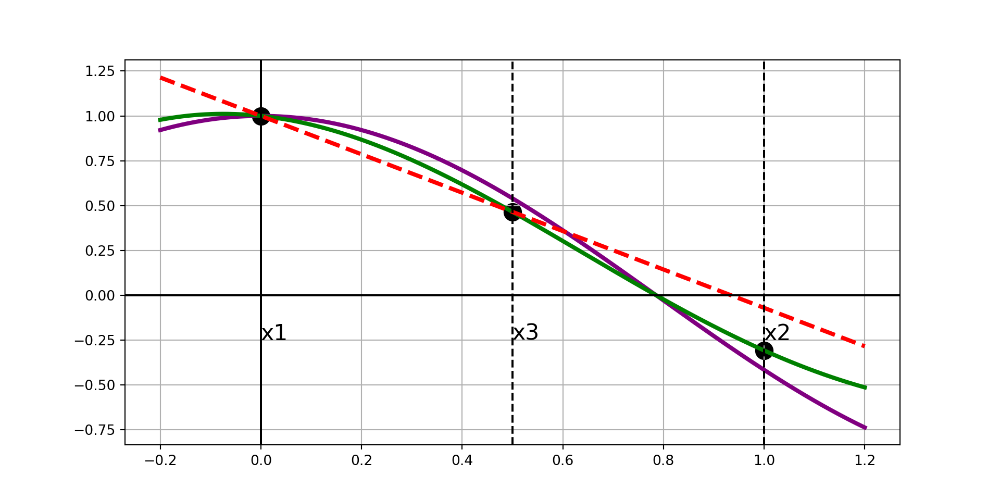Ridder’s Method, Visually
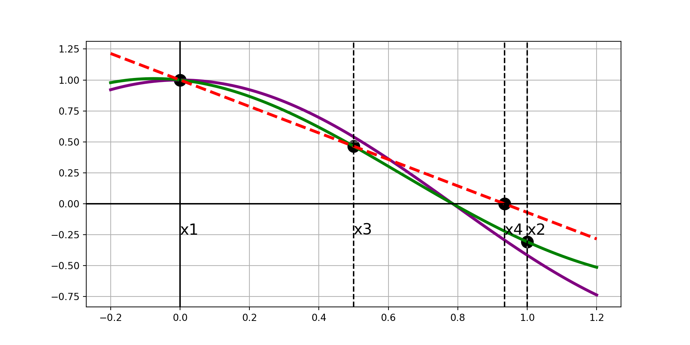Ridder’s Method, Visually
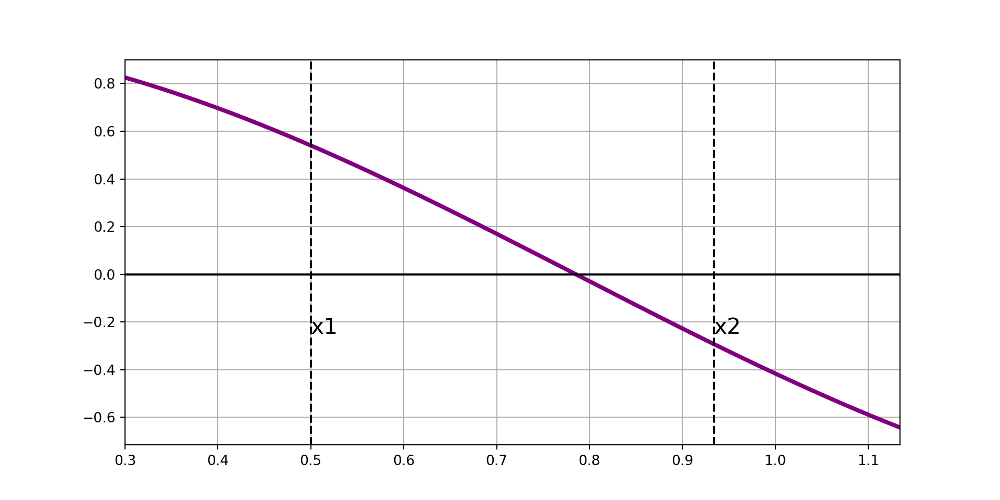Ridder’s Method, Visually
Ridder’s Method, Visually
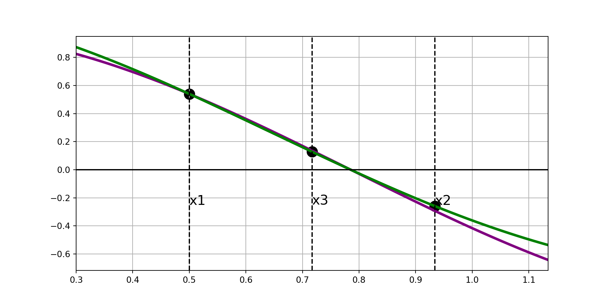Ridder’s Method, Visually
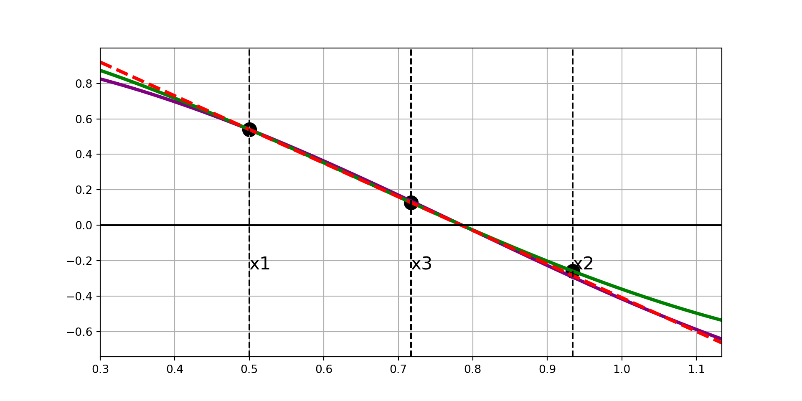Ridder’s Method, Visually
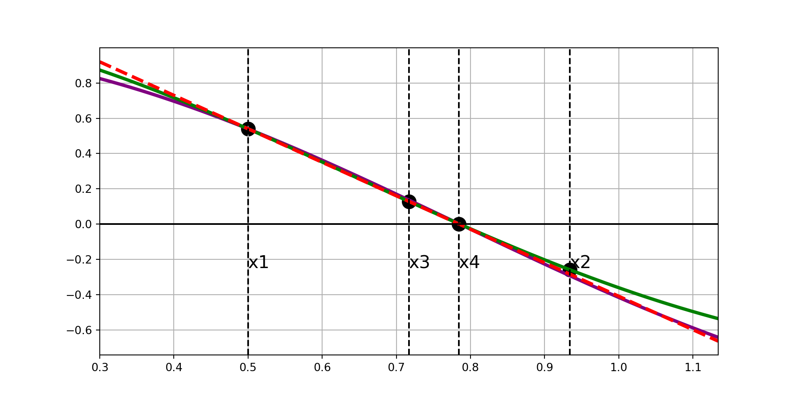Now that we’ve built some visual intuition, we’ll dig into the math behind the scenes.
Solving for Q and Identifying \(x_4\)
For convenience, let’s use the notation \(f_i = f\left(x_i\right)\).
In step 3 of Ridder’s Method, we’ve constructed three points:
\[\begin{align*} \left(x_1, g_1\right) &= \left(x_1, f_1\right)\\ \left(x_2, g_2\right) &= \left(x_2, f_2e^{2hQ}\right)\\ \left(x_3, g_3\right) &= \left(x_3, f_3e^{hQ}\right) \end{align*}\]
These three points will be collinear if
\[\displaystyle{g_3 = \frac{g_1 + g_2}{2}}\]
This is equivalent to
\[\displaystyle{f_3e^{hQ} = \frac{1}{2}\left(f_1 + f_2e^{2hQ}\right)}\]
This means that
\[\begin{align*} f_3e^{hQ} &= \frac{1}{2}\left(f_1 + f_2e^{2hQ}\right) \end{align*}\]
Solving for Q and Identifying \(x_4\)
For convenience, let’s use the notation \(f_i = f\left(x_i\right)\).
In step 3 of Ridder’s Method, we’ve constructed three points:
\[\begin{align*} \left(x_1, g_1\right) &= \left(x_1, f_1\right)\\ \left(x_2, g_2\right) &= \left(x_2, f_2e^{2hQ}\right)\\ \left(x_3, g_3\right) &= \left(x_3, f_3e^{hQ}\right) \end{align*}\]
These three points will be collinear if
\[\displaystyle{g_3 = \frac{g_1 + g_2}{2}}\]
This is equivalent to
\[\displaystyle{f_3e^{hQ} = \frac{1}{2}\left(f_1 + f_2e^{2hQ}\right)}\]
This means that
\[\begin{align*} f_3e^{hQ} &= \frac{1}{2}\left(f_1 + f_2e^{2hQ}\right)\\ \implies 2f_3e^{hQ} &= f_1 + f_2e^{2hQ} \end{align*}\]
Solving for Q and Identifying \(x_4\)
For convenience, let’s use the notation \(f_i = f\left(x_i\right)\).
In step 3 of Ridder’s Method, we’ve constructed three points:
\[\begin{align*} \left(x_1, g_1\right) &= \left(x_1, f_1\right)\\ \left(x_2, g_2\right) &= \left(x_2, f_2e^{2hQ}\right)\\ \left(x_3, g_3\right) &= \left(x_3, f_3e^{hQ}\right) \end{align*}\]
These three points will be collinear if
\[\displaystyle{g_3 = \frac{g_1 + g_2}{2}}\]
This is equivalent to
\[\displaystyle{f_3e^{hQ} = \frac{1}{2}\left(f_1 + f_2e^{2hQ}\right)}\]
This means that
\[\begin{align*} f_3e^{hQ} &= \frac{1}{2}\left(f_1 + f_2e^{2hQ}\right)\\ \implies 2f_3e^{hQ} &= f_1 + f_2e^{2hQ}\\ \implies f_2\left(e^{hQ}\right)^2 - 2f_3\left(e^{hQ}\right) + f_1 &= 0 \end{align*}\]
Solving for Q and Identifying \(x_4\)
For convenience, let’s use the notation \(f_i = f\left(x_i\right)\).
In step 3 of Ridder’s Method, we’ve constructed three points:
\[\begin{align*} \left(x_1, g_1\right) &= \left(x_1, f_1\right)\\ \left(x_2, g_2\right) &= \left(x_2, f_2e^{2hQ}\right)\\ \left(x_3, g_3\right) &= \left(x_3, f_3e^{hQ}\right) \end{align*}\]
These three points will be collinear if
\[\displaystyle{g_3 = \frac{g_1 + g_2}{2}}\]
This is equivalent to
\[\displaystyle{f_3e^{hQ} = \frac{1}{2}\left(f_1 + f_2e^{2hQ}\right)}\]
This means that
\[\begin{align*} f_3e^{hQ} &= \frac{1}{2}\left(f_1 + f_2e^{2hQ}\right)\\ \implies 2f_3e^{hQ} &= f_1 + f_2e^{2hQ}\\ \implies f_2\left(e^{hQ}\right)^2 - 2f_3\left(e^{hQ}\right) + f_1 &= 0\\ \stackrel{M = e^{hQ}}{\implies} f_2M^2 -2f_3M + f_1 &= 0 \end{align*}\]
Solving for Q and Identifying \(x_4\)
For convenience, let’s use the notation \(f_i = f\left(x_i\right)\).
In step 3 of Ridder’s Method, we’ve constructed three points:
\[\begin{align*} \left(x_1, g_1\right) &= \left(x_1, f_1\right)\\ \left(x_2, g_2\right) &= \left(x_2, f_2e^{2hQ}\right)\\ \left(x_3, g_3\right) &= \left(x_3, f_3e^{hQ}\right) \end{align*}\]
These three points will be collinear if
\[\displaystyle{g_3 = \frac{g_1 + g_2}{2}}\]
This is equivalent to
\[\displaystyle{f_3e^{hQ} = \frac{1}{2}\left(f_1 + f_2e^{2hQ}\right)}\]
This means that
\[\begin{align*} f_3e^{hQ} &= \frac{1}{2}\left(f_1 + f_2e^{2hQ}\right)\\ \implies 2f_3e^{hQ} &= f_1 + f_2e^{2hQ}\\ \implies f_2\left(e^{hQ}\right)^2 - 2f_3\left(e^{hQ}\right) + f_1 &= 0\\ \stackrel{M = e^{hQ}}{\implies} f_2M^2 -2f_3M + f_1 &= 0\\ \stackrel{\text{Quad. Form.}}{\implies} M &= \frac{2f_3 \pm \sqrt{\left(4f_3^2 - 4f_2f_1\right)}}{2f_2} \end{align*}\]
Solving for Q and Identifying \(x_4\)
For convenience, let’s use the notation \(f_i = f\left(x_i\right)\).
In step 3 of Ridder’s Method, we’ve constructed three points:
\[\begin{align*} \left(x_1, g_1\right) &= \left(x_1, f_1\right)\\ \left(x_2, g_2\right) &= \left(x_2, f_2e^{2hQ}\right)\\ \left(x_3, g_3\right) &= \left(x_3, f_3e^{hQ}\right) \end{align*}\]
These three points will be collinear if
\[\displaystyle{g_3 = \frac{g_1 + g_2}{2}}\]
This is equivalent to
\[\displaystyle{f_3e^{hQ} = \frac{1}{2}\left(f_1 + f_2e^{2hQ}\right)}\]
This means that
\[\begin{align*} f_3e^{hQ} &= \frac{1}{2}\left(f_1 + f_2e^{2hQ}\right)\\ \implies 2f_3e^{hQ} &= f_1 + f_2e^{2hQ}\\ \implies f_2\left(e^{hQ}\right)^2 - 2f_3\left(e^{hQ}\right) + f_1 &= 0\\ \stackrel{M = e^{hQ}}{\implies} f_2M^2 -2f_3M + f_1 &= 0\\ \stackrel{\text{Quad. Form.}}{\implies} M &= \frac{2f_3 \pm \sqrt{\left(4f_3^2 - 4f_2f_1\right)}}{2f_2}\\ \implies M &= \frac{f_3 \pm \sqrt{\left(f_3^2 - f_2f_1\right)}}{f_2} \end{align*}\]
So
\[M = e^{hQ} = \frac{f_3 \pm \sqrt{\left(f_3^2 - f_2f_1\right)}}{f_2}\]
Identifying \(x_4\) (Cont’d)
Now that we know \(M = e^{hQ} = \frac{f_3 \pm \sqrt{\left(f_3^2 - f_2f_1\right)}}{f_2}\)
We have,
\[\implies \left(x_1, g_1\right) = \left(x_1, f_1\right),~~~\left(x_2, g_2\right) = \left(x_2, f_2\frac{f_3 \pm \sqrt{\left(f_3^2 - f_2f_1\right)}}{f_2}\right),~~~~\text{and}~~~~\left(x_3, g_3\right) = \left(x_3, f_3\frac{f_3 \pm \sqrt{\left(f_3^2 - f_2f_1\right)}}{f_2}\right)\]
We can use linear interpolation between \(\left(x_1, g_1\right)\) and \(\left(x_3, g_3\right)\) to obtain
\[y = \left(\frac{g_3 - g_1}{x_3 - x_1}\right)\left(x - x_3\right) + g_3\]
Solving for the root, \(x_4\) gives
\[\begin{align*} 0 &= \left(\frac{g_3 - g_1}{x_3 - x_1}\right)\left(x - x_3\right) + g_3 \end{align*}\]
Identifying \(x_4\) (Cont’d)
Now that we know \(M = e^{hQ} = \frac{f_3 \pm \sqrt{\left(f_3^2 - f_2f_1\right)}}{f_2}\)
We have,
\[\implies \left(x_1, g_1\right) = \left(x_1, f_1\right),~~~\left(x_2, g_2\right) = \left(x_2, f_2\frac{f_3 \pm \sqrt{\left(f_3^2 - f_2f_1\right)}}{f_2}\right),~~~~\text{and}~~~~\left(x_3, g_3\right) = \left(x_3, f_3\frac{f_3 \pm \sqrt{\left(f_3^2 - f_2f_1\right)}}{f_2}\right)\]
We can use linear interpolation between \(\left(x_1, g_1\right)\) and \(\left(x_3, g_3\right)\) to obtain
\[y = \left(\frac{g_3 - g_1}{x_3 - x_1}\right)\left(x - x_3\right) + g_3\]
Solving for the root, \(x_4\) gives
\[\begin{align*} 0 &= \left(\frac{g_3 - g_1}{x_3 - x_1}\right)\left(x - x_3\right) + g_3\\ \implies -g_3\left(\frac{x_3 - x_1}{g_3 - g_1}\right) &= x - x_3 \end{align*}\]
Identifying \(x_4\) (Cont’d)
Now that we know \(M = e^{hQ} = \frac{f_3 \pm \sqrt{\left(f_3^2 - f_2f_1\right)}}{f_2}\)
We have,
\[\implies \left(x_1, g_1\right) = \left(x_1, f_1\right),~~~\left(x_2, g_2\right) = \left(x_2, f_2\frac{f_3 \pm \sqrt{\left(f_3^2 - f_2f_1\right)}}{f_2}\right),~~~~\text{and}~~~~\left(x_3, g_3\right) = \left(x_3, f_3\frac{f_3 \pm \sqrt{\left(f_3^2 - f_2f_1\right)}}{f_2}\right)\]
We can use linear interpolation between \(\left(x_1, g_1\right)\) and \(\left(x_3, g_3\right)\) to obtain
\[y = \left(\frac{g_3 - g_1}{x_3 - x_1}\right)\left(x - x_3\right) + g_3\]
Solving for the root, \(x_4\) gives
\[\begin{align*} 0 &= \left(\frac{g_3 - g_1}{x_3 - x_1}\right)\left(x - x_3\right) + g_3\\ \implies -g_3\left(\frac{x_3 - x_1}{g_3 - g_1}\right) &= x - x_3\\ \implies x &= x_3 - g_3\left(\frac{x_3 - x_1}{g_3 - g_1}\right) \end{align*}\]
Identifying \(x_4\) (Cont’d)
Now that we know \(M = e^{hQ} = \frac{f_3 \pm \sqrt{\left(f_3^2 - f_2f_1\right)}}{f_2}\)
We have,
\[\implies \left(x_1, g_1\right) = \left(x_1, f_1\right),~~~\left(x_2, g_2\right) = \left(x_2, f_2\frac{f_3 \pm \sqrt{\left(f_3^2 - f_2f_1\right)}}{f_2}\right),~~~~\text{and}~~~~\left(x_3, g_3\right) = \left(x_3, f_3\frac{f_3 \pm \sqrt{\left(f_3^2 - f_2f_1\right)}}{f_2}\right)\]
We can use linear interpolation between \(\left(x_1, g_1\right)\) and \(\left(x_3, g_3\right)\) to obtain
\[y = \left(\frac{g_3 - g_1}{x_3 - x_1}\right)\left(x - x_3\right) + g_3\]
Solving for the root, \(x_4\) gives
\[\begin{align*} 0 &= \left(\frac{g_3 - g_1}{x_3 - x_1}\right)\left(x - x_3\right) + g_3\\ \implies -g_3\left(\frac{x_3 - x_1}{g_3 - g_1}\right) &= x - x_3\\ \implies x &= x_3 - g_3\left(\frac{x_3 - x_1}{g_3 - g_1}\right)\\ \implies x &= x_3 - f_3e^{hQ}\left(\frac{x_3 - x_1}{f_3e^{hQ} - f_1}\right) \end{align*}\]
Identifying \(x_4\) (Cont’d)
Now that we know \(M = e^{hQ} = \frac{f_3 \pm \sqrt{\left(f_3^2 - f_2f_1\right)}}{f_2}\)
We have,
\[\implies \left(x_1, g_1\right) = \left(x_1, f_1\right),~~~\left(x_2, g_2\right) = \left(x_2, f_2\frac{f_3 \pm \sqrt{\left(f_3^2 - f_2f_1\right)}}{f_2}\right),~~~~\text{and}~~~~\left(x_3, g_3\right) = \left(x_3, f_3\frac{f_3 \pm \sqrt{\left(f_3^2 - f_2f_1\right)}}{f_2}\right)\]
We can use linear interpolation between \(\left(x_1, g_1\right)\) and \(\left(x_3, g_3\right)\) to obtain
\[y = \left(\frac{g_3 - g_1}{x_3 - x_1}\right)\left(x - x_3\right) + g_3\]
Replacing \(e^{hQ}\) with \(\displaystyle{\frac{f_3\pm\sqrt{\left(f_3^2 - f_1f_2\right)}}{f_2}}\) and doing some significant algebra work leads to \(x = x_3 \pm \left(x_3 - x_1\right)\frac{f_3}{\sqrt{\left(f_3^2 - f_1f_2\right)}}\)
We’ll take \(x_4\) to be the solution with addition in the numerator.
Solving for the root, \(x_4\) gives
\[\begin{align*} 0 &= \left(\frac{g_3 - g_1}{x_3 - x_1}\right)\left(x - x_3\right) + g_3\\ \implies -g_3\left(\frac{x_3 - x_1}{g_3 - g_1}\right) &= x - x_3\\ \implies x &= x_3 - g_3\left(\frac{x_3 - x_1}{g_3 - g_1}\right)\\ \implies x &= x_3 - f_3e^{hQ}\left(\frac{x_3 - x_1}{f_3e^{hQ} - f_1}\right)\\ \implies x&= x_3 - \left(x_3 - x_1\right)\frac{f_3e^{hQ}}{f_3e^{hQ} - f_1} \end{align*}\]
Shrinking the Interval
We now have four points of interest.
- Our original boundary values, \(x_1\) and \(x_2\).
- The midpoint of the interval, \(x_3\).
- The new false-position approximation point \(x_4 = x_3 + \left(x_3 - x_1\right)\frac{f_3}{\sqrt{\left(f_3^2 - f_1f_2\right)}}\).
We examine all of the possible sub-intervals and choose to collapse to the narrowest interval \(\left[x_i, x_j\right]\) such that the root is still bracketed on the shrunken interval.
At this point, \(x_1\) becomes the left endpoint of that smaller sub-interval, and \(x_2\) becomes the right endpoint.
From here, we either repeat or terminate the process.
Upon termination, the final false-position estimate \(x_4\) is returned as the numerical approximation for the root.
Implementing Ridder’s Method
def ridder(f, a, b, tol = 1.0e-9):
x1 = a
f1 = f(a)
if f1 == 0:
return x1
x2 = b
f2 = f(x2)
if f2 == 0:
return x2
if np.sign(f1) == np.sign(f2):
print("The root is not bracketed!")
return None
for i in range(30):
x3 = (x1 + x2)/2
f3 = f(x3)
s = (f3**2 - f1*f2)**0.5
if s == 0.0:
return None
dx = (x3 - x1)*f3/s
if (f1 - f2) < 0.0:
dx = -dx
x4 = x3 + dx
f4 = f(x4)
#Test for convergence
if i > 0:
if abs(x4 - xOld) < tol*max(abs(x4), 1.0):
return x4
xOld = x4
#Re-bracket the root as tightly as possible
if np.sign(f3) == np.sign(f4):
if np.sign(f1) != np.sign(f4):
x2 = x4
f2 = f4
else:
x1 = x4
f1 = f4
else:
x1 = x3
x2 = x4
f1 = f3
f2 = f4
print("Too many iterations. Root-finding expedition did not converge.")
return NoneExample: Use our Ridder’s Method routine to find the root of the function \(f\left(x\right) = x^3 - 10x^2 + 5\) on the interval \(\left[0.6, 0.8\right]\)
Example: Use our Ridder’s Method routine to find the root of the function \(\displaystyle{f\left(x\right) = \frac{1}{\left(x - 0.3\right)^2 + 0.01} - \frac{1}{\left(x - 0.8\right)^2 + 0.04}}\). Plot the function first to obtain an interval which brackets the root (or use incremental search to find one!).
The Newton-Raphson Method
You’ve probably heard of, and maybe used, “Newton’s Method” for approximating the root of a function previously.
It is one of the most well-known and commonly used methods for root-finding. The approach is simple:
- Choose an initial guess for the root, \(x_0\).
- Construct the line tangent to \(f\left(x\right)\) at \(x_n\) (with \(n\) starting at \(0\)).
- Let \(x_{n+1}\) be the root of the tangent line to \(f\left(x\right)\) at \(x_n\).
- Repeat steps 2 and 3 until a convergence criteria is met or a maximum number of iterations is run.
The Newton-Raphson Method is so often used because it is simple and fast.
The drawback to this method is that it requires evaluating the original function \(f\left(x\right)\) and its derivative, \(f'\left(x\right)\), at each iteration.
This means that the method is only applicable in scenarios where \(f'\left(x\right)\) can be obtained.
Convergence Concerns
The convergence of the Newton-Raphson Method (using tangent lines to find roots) depends on the proximity of \(x_n\) to the desired root and the curvature of \(f\left(x\right)\) at \(x_n\). See the two scenarios below:
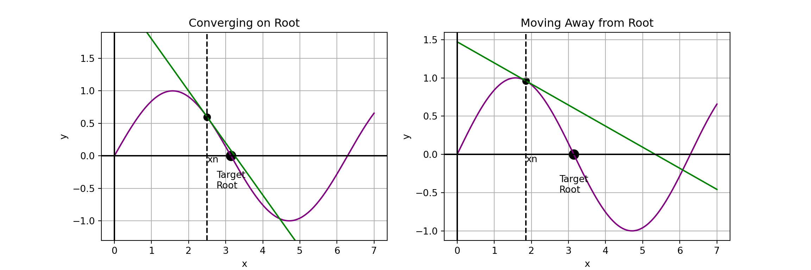
In each case above, our next estimate of the target root is the root of the tangent line.
In the plot on the right, we can see that the next iteration of the Newton-Raphson Method will result in an approximation which moves even further from the target root.
Takeaway: The Newton-Raphson Method requires a reasonably good initial estimate for the target root in order for it to converge to the correct root.
Adjusting Newton-Raphson
Because of the possibility the Newton-Raphson Method begins moving away from the target root and may perhaps identify an incorrect root, it is common to pair the Newton-Raphson Method with the Bisection Method.
This involves
- Begin with a bracketing interval \(\left[a, b\right]\) for the desired root of \(f\left(x\right)\).
- Compute \(\displaystyle{x_0 = \frac{a + b}{2}}\).
- Check to determine whether \(\left[a, x_n\right]\) or \(\left[x_n, b\right]\) is bracketed and update \(\left[a, b\right]\) to be the bracketed half-interval, where \(x_n\) is initially \(x_0\).
- Determine the root of the tangent line to \(f\left(x\right)\) at \(x_n\), and set this equal to \(x_{n+1}\).
- If \(x_{n+1}\) is outside of \(\left[a, b\right]\), set \(\displaystyle{x_{n+1} = \frac{a + b}{2}}\).
- If \(\left[a, x_{n+1}\right]\) is bracketed, then set \(b = x_{n+1}\), otherwise set \(a = x_{n +1}\).
- Repeat steps 4 and 5 until the difference between \(x_n\) and \(x_{n+1}\) drops below a set tolerance. Return the final \(x_{n+1}\) as the approximated root.
Again, all steps above are simple evaluations other than Step 4.
Note that the equation of the tangent line to \(f\left(x\right)\) at \(x_n\) is given by \(y = f'\left(x_n\right)\left(x - x_n\right) + f\left(x_n\right)\).
The root of the tangent line then is \(\displaystyle{x_{n+1} = -\frac{f\left(x_n\right)}{f'\left(x_n\right)} + x_n}\).
This is the version we’ll implement.
Implementing Newton-Raphson
def NewtonRaphson(f, df, a, b, tol = 1.0e-9, max_its = 30):
fa = f(a)
if fa == 0.0:
return a
fb = f(b)
if fb == 0.0:
return b
if np.sign(fa) == np.sign(fb):
print("The interval [a, b] is not bracketed.")
return None
x = (a + b)/2
for i in range(max_its):
fx = f(x)
if fx == 0.0:
return x
if np.sign(fa) != np.sign(fx):
b = x
else:
a = x
#Construct tangent line and compute root
dfx = df(x)
if dfx == 0.0:
dx = b - a
else:
dx = -fx/dfx
x = x + dx
#print("x" +str(i), " = ", x)
#If the new estimate is outside the interval, use bisection
if (b - x)*(x - a) < 0.0:
dx = (b - a)/2
x = a + dx
#Check for convergence
if abs(dx) < tol*max(abs(b), 1.0):
return x
print("Newton-Raphson did not converge.")
return NoneExample 1: Use our Newton-Raphson Method routine to find the root of the function \(f\left(x\right) = x^3 - 10x^2 + 5\) on the interval \(\left[0.6, 0.8\right]\)
Example 2: Use NewtonRaphson() to find the root of the function \(\displaystyle{f\left(x\right) = \frac{1}{\left(x - 0.3\right)^2 + 0.01} - \frac{1}{\left(x - 0.8\right)^2 + 0.04}}\). Use the bracketing interval you started with when you first tried finding the root of this function.
Example 3: Use the NewtonRaphson() routine to approximate \(\sqrt{2}\).
Summary
In this [lengthy] discussion we introduced, constructed, and utilized several root-finding methods which use linear interpolation techniques.
We saw that the bisection method and false position methods will close in on the root of a function if given a bracketed starting interval.
- The convergence of these methods, however, can be somewhat slow.
We saw Ridder’s Method as an improvement to the false position method which had near-quadratic convergence.
- This means that Ridder’s Method approximately doubles the number of significant digits after each iteration.
We also saw that the Newton-Raphson Method has rapid convergence on the root, but requires that the function whose root we are trying to compute be differentiable.
Next Time: In our next discussion, we’ll consider root-finding techniques for systems of equations (including non-linear systems). This is one of the most empowering topics we cover all semester long.